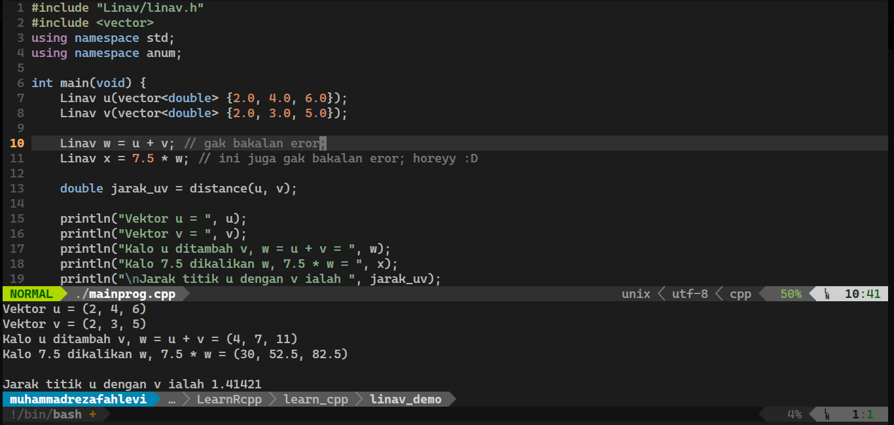

C++ merupakan salah satu bahasa pemrograman favorit bagi mereka yang suka mengkomputasi sesuatu secara manual, dan mereka yang memiliki pemahan yang baik mengetai algoritma. Kecepatan C++ dalam mengeksekusi program membuatnya sesuai untuk menyelesaikan permasalahan optimisasi parameter-rill sulit, yang mana permasalahan ini biasanya dimodelkan ke bentuk vektor aljabar linear.
C++ memiliki pustaka standar (standard library) yang menyediakan fungsi yang berguna untuk mempermudah suatu komputasi. Fungsi yang disediakan oleh pustaka standar ini dapat digunakan dengan mendeklarasikan header C++. Salah satu header C++ yang berguna ialah vector, yang mana dengan mendeklarasikan #include <vector>, kita dapat mendeklarasikan variable dengan tipe data std::<vector> yang ukurannya tidak tetap.
Misalnya, jika kita mempunyai kodingan sebagai berikut
Pada awalnya, v merupakan vektor dengan anggota 2.0, 3.0, 5.0, setelah v.pushback(7.0) maka anggota v ialah 2.0, 3.0, 5.0, 7.0. Akan tetapi, permasalahannya muncul ketika kita mempunya kodingan C++ berikut
Jika program ini dikompilasi (compile) dan dieksekusi (execution), maka akan menampilkan pesan eror.
C++ mempunyai std::linalg yang berguna untuk memudahkan komputasi aljabar linear. Dengan menggunakan std::linalg, kita dapat komputasi penjumlahan titik (pointwise addition) dan multiplikasi-s (s-multiplication), yang mana, operator ini merupakan operator utama dalam vektor aljabar linear.
Meskipun demikan, memiliki dan mengembangkan header C++ sendiri merupakan latihan yang baik, dan setidaknya dilakukan sekali seumur hidup. Oleh karena itu, kami mengembangkan header C++ linav.h yang berguna untuk memperlakukan std::vector layaknya vektor aljabar linear. Berikut merupakan demonstrasi singkat kegunaan linav.h
#include "Linav/linav.h"
#include <vector>
using namespace std;
using namespace anum;
int main(void) {
Linav u(vector<double> {2.0, 4.0, 6.0});
Linav v(vector<double> {2.0, 3.0, 5.0});
// ini namanya penjumlahan titik,
// kalo bahasa kampungnya pointwise addition
Linav w = u + v; // gak bakalan eror;
// Nah, kalo ini namanya multiplikasi-s,
// kalo bahasa kampungnya ini tuh s-multiplication.
// kalo masih bingung juga dengan istilahnya, anggap
// aja ini perkalian skalar
Linav x = 7.5 * w; // ini juga gak bakalan eror; horeyy :D
// Yang ini tuh namanya fungsi untuk menghitung
// jarak aku dan doi jika aku di titik u dan doi
// di titik v. Kalo bahasa kampungnya itu Euclidean distance
double jarak_uv = distance(u, v);
// tampilkan hasil komputasinya
println("Vektor u = ", u);
println("Vektor v = ", v);
println("Kalo u ditambah v, w = u + v = ", w);
println("Kalo 7.5 dikalikan w, 7.5 * w = ", x);
println("\nJarak titik u dengan v ialah ", jarak_uv);
}Jika kodingan C++ ini dikompilasi dan dieksekusi, maka keluaran dari kodingan ini sebagai berikut
$\texttt{Vektor u = (2, 4, 6)}$$\texttt{Vektor v = (2, 3, 5)}$
$\texttt{Kalo u ditambah v, w = u + v = (4, 7, 11)}$
$\texttt{Kalo 7.5 dikalikan w, 7.5 * w = (30, 52.5, 82.5)}$
$\texttt{Jarak titik u dengan v ialah 1.41421}$
Hal-hal yang sifatnya detail mengenai header C++ linav.h, maka kami sarankan untuk membaca artikel (riset) berikut, Linav: Computation of Vectors in Linear Algebra. Dan untuk mengkonfigurasi header linav.h, dapat dilihat di halaman github Linav kami.